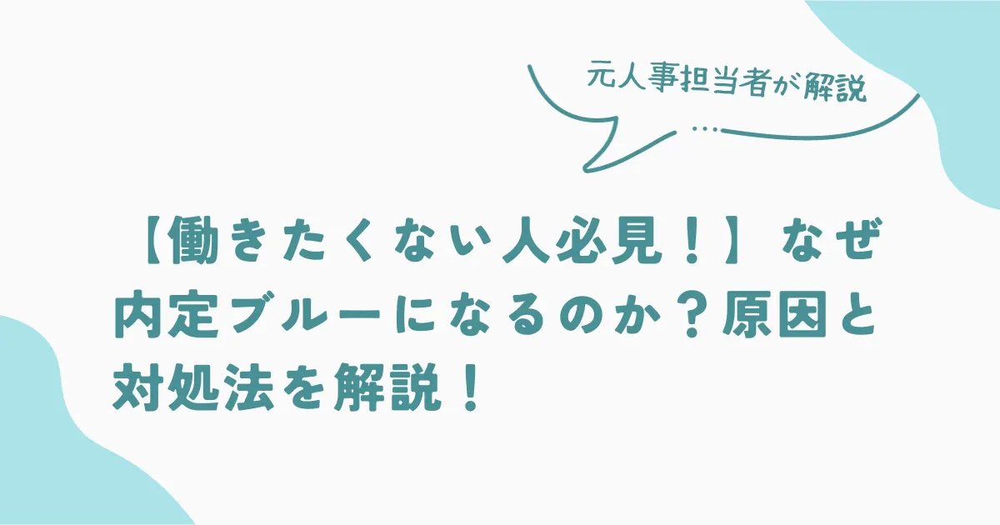

【働きたくない人必見！】なぜ内定ブルーになるのか？原因と対処法を解説！

このような人におすすめ
- 内定をもらったが、働く気が起きない
- 希望していた条件と異なる内定を受け入れるのがつらい
- 新たな職場への不安が募り、働く気力を失ってしまった
就活が終わって、これから社会人として働くことが決まったものの、働くことに不安を感じている人も多いのではないでしょうか。就活生の中には「内定を受け取って安心するはずなのに、むしろ不安が増えてしまう」人もいます。中には「このまま働きたくない」と思っている人もいるでしょう。社会人経験がない学生にとって、就職が不安になるのは当然のことです。
筆者もこれまで、300名近くの学生を採用してきましたが、このような学生を何人も見てきました。本記事では「内定ブルーの原因と対処法」について人事担当者として内定者フォローで新卒生から聞いた意見をもとにアドバイスします。最後まで読めば、自信を持って社会人としての第一歩を踏み出せるでしょう。
内定ブルーだと感じている人は、ぜひ読んでください。
そもそも内定ブルーって何？
内定ブルーとは「内定承諾後から入社するまでの間に不安を感じ、気分が落ち込んでしまう状態」のことです。就職という人生の大きな選択において、1社に絞ることはその他の選択肢を捨てなければなりません。また、就職後は今の生活も大きく変わります。そのため「これで良かったのか」と不安になる人は少なくありません。
第1志望に不合格だったため、第2志望に就職を決めた人にとっては余計にそう感じるでしょう。内定ブルーは、選択したことへの不安ではなく、「他の選択肢を捨てたことによる不安」なのです。
内定ブルーは誰にでも起こる
内定ブルーは、就職先が決まって安心した時に起こる傾向があります。これは環境の変化が原因で「誰にでも起こり得ること」なので悲観的になる必要はありません。内定をもらい「あとは卒業を待つだけ」の時期になると気持ちが落ち着くケースはよくあります。
残りの大学生活で新たなことに興味が湧くことや、新しい自分を発見する機会もあるでしょう。そのような時期に「就職して社会人として働いているイメージができない」ことや「内定先に不安を感じる」人は少なくありません。
筆者が内定者フォローを行なった実感としては、約半数の学生は内定ブルーの経験がある印象です。
内定ブルーは自分と向き合うチャンス
「本当にこの選択で良かったのか」という不安を抱えたまま就職してしまうと、後ろ向きな社会人生活を送ることになりかねません。そのため、内定ブルーだと感じたら誰かに話してみましょう。家族でも友人でも誰でも構いません。SNSなど匿名で相談に乗ってくれるサイトもあります。第三者から客観的な意見を聞けば、落ち込んでいる原因がわかる場合も多いです。
「内定ブルーは自分と向き合うチャンス」でもあります。しっかりと向き合えば前向きに行動できます。
内定ブルーが起こる原因9選
内定をもらってうれしいはずなのに、そもそもなぜ内定ブルーが起こるのでしょうか。内定者フォローで、相談を受けてわかった主な原因を9つ紹介します。
- 内定をもらうことが目的になっていた
- 就活の結果に納得できていない
- 辞退した企業に未練がある
- 入社後、活躍できるか不安
- 環境が変わることに不安
- 他にやりたいことが見つかった
- 勤務地に不安がある
- 内定先の悪い評判や口コミを見た
- 家族など周囲の人が納得していない
原因を知れば対処しやすくなるので、自分に当てはまるものがないかチェックしてみてください。
1. 内定をもらうことが目的になっていた
就活生によくあるのが、就活を進めていくうちに「早く終わらせたい」との気持ちから内定をもらうことがゴールになってしまうケースです。誰もが「就職して会社で活躍する」のが目的で、そのための会社を探す活動をします。しかし、なかなか内定がもらえなかったり活動に忙しかったりすると、いつの間にか「内定をもらうこと」が目的に変わってしまうのです。
このようなケースは、就活が終わって落ち着いたときに「本当にこの会社でいいのか」と悩む人に多い傾向があります。もし、あなたがこのような状況なら「入社前に気づけて良かった」と考えることも必要です。
2. 就活の結果に納得できていない
入社したいと思っていた企業の内定がもらえず、第2志望や第3志望の企業に変更した人に多いのがこのパターンです。「納得できないまま入社しても、仕事に身が入らない」と思うでしょう。しかし、実際に働いてみないと自分に合うかどうかわかりません。第1志望の会社に入社したものの、早期に退職する学生も多いのです。
一方で「入社時はあまり良い印象がなかったが、入ってみたら自分にあっていた」ということも少なくありません。
このような気持ちの時は、まず入社して働いてみることをおすすめします。その後、キャリアを積めば転職も可能です。
3. 辞退した企業に未練がある
いくつかの企業に内定をもらっていた場合、辞退した後に「やっぱりあの企業にすれば良かった」と感じるケースがあります。しかし、何らかの魅力があったから、内定を承諾したはずです。このような人は、自分がこの企業を選んだ理由をもう一度考えてみましょう。
「隣の芝生は青く見える」ことはよくあります。一度、決めてしまったら他と比較しないことも後悔しないポイントです。
4. 入社後、活躍できるか不安
面接の時は、自分の強みを自信たっぷりに話し「頑張ります」と言ったものの、冷静になって考えたら不安に思うことはよくあります。さらに、内定者が自分よりも高学歴の人が多かったり、内定後に採用担当者から「活躍を期待しています」と声をかけられたりすればなおさらですね。
しかし、企業側は熟慮を重ねてあなたに内定を出しています。つまり「他の内定者と同じレベル」なのです。気にする必要はありません。
5. 環境が変わることに不安
社会人として働き出せば、今までとは大きく環境が変わります。人が環境の変化に対して不安になることは特別なことではありません。誰しもこれから始まる社会人としての未知の世界に不安になるのは当然です。しかし、まだ始まってもいないことをマイナスに考えても仕方ありません。
逆に「不安」を「期待」に変えて考えてみましょう。たとえば、社会人になったらやってみたいことなど、前向きに考えると不安が解消されることがあります。
6. 他にやりたいことが見つかった
就活中の自己分析によって「やりたいこと」を見つけて、応募した企業ですが、内定後に別のやりたいことが見つかる場合もあります。見かたを変えると「やりたいことが見つかった＝可能性が広がった」とも言えるでしょう。まずは、内定をもらった企業でも「自分がやりたいことが実現できないか」を模索してみましょう。
自分がやりたいことができない環境だと、モチベーションの維持が難しくなります。そのため「やりたいことを実現するためのファーストステップ」だと考えて、内定企業でできることから始めるのもひとつの方法です。
7. 勤務地に不安がある
全国転勤がある企業から内定をもらった学生に多い原因のひとつが勤務地への不安です。特に「地方勤務を命じられたらどうしよう」と思う人も少なくありません。新卒の場合は勤務地の希望を出せないことも多く、知らない土地での生活や仕事に対して不安になるケースがあります。
しかし、地方での勤務は業務が多岐にわたることが多く、スキルが身につきやすいというメリットもあります。また、都心に比べると生活コストがかからないので、貯金もしやすくなるのが特徴です。幅広い業務を経験してスキルアップすれば、将来的に活躍の門戸が広がるチャンスでもあります。地方勤務に悲観的にならず「同期に差をつけるチャンス」だと考えましょう。
8. 内定先の悪い評判や口コミを見た
内定をもらい就職先が決まると「自分が入社する企業の評判」が気になり、口コミサイトなどを見る学生も多くいます。そこで、悪い評価や口コミを目にすることも少なくありません。しかし、口コミサイトは匿名投稿ができるため、ネガティブな意見が多いのも特徴です。
不満があって退職した人などが書き込んでいることが多く、多少盛って書き込んでいる場合があります。したがって、口コミサイトに書いてあることが全て真実とは限らないので、注意が必要です。
9. 家族など周囲の人が納得していない
自分は納得していても、家族など周りの人が就活の結果に満足していない場合も不安になることがあります。周囲からも納得してもらうのが理想です。しかし、周りが納得していないからといって、他人の意見に流されるのはよくありません。実際に第三者は自分で就職先を調べたわけではなく、あくまでも企業イメージで判断しているにすぎません。
あなたの人生なので、自分が選んだ人生を歩むことを優先しましょう。
内定ブルーになったときの対処法
ここまで、内定ブルーになる原因を解説してきました。注意しても内定ブルーになってしまった場合は以下の対処法が効果的です。内定ブルーだと感じている人は、自分に合うものを試してみてください。
- 内定者向けの懇親会や座談会に参加する
- 自分の強みや志望動機を思い出す
- 採用担当者や現役社員に相談する
- 完璧を求めない
- 新しいことをはじめてみる
ひとつずつ解説します。
内定者向けの懇親会や座談会に参加する
志望度が低い企業に内定を決めた人は、納得感が得られず不安になることも少なくありません。このような人は、内定者向けの懇親会や座談会が開催されるときは必ず参加しましょう。実際に働いている先輩社員と話せば、入社後がイメージしやすくなります。
また、内定者懇親会は同期も参加するため、同じ不安を抱えている人たちと共有できます。周りにも同じ境遇の人がいると不安が和らぐことも多いため、内定者向けの懇親会や座談会には積極的に参加しましょう。
自分の強みや志望動機を思い出す
内定ブルーになったときは「自分の強み」や「なぜその企業を志望したのか」などを思い出すとよいでしょう。初心に返って将来に目を向けることで、前向きな気持ちになりやすくなります。内定を獲得できたのは、自分の強みが評価されたからなのです。どうすれば自分の強みを発揮できるかを考えてみましょう。
採用担当者や現役社員に相談する
不安になったときは、採用担当者に相談してみましょう。採用担当者は、同じ不安を抱えた学生を過去にたくさん見てきています。そのため、あなたの気持ちはよく理解しているのです。内定者のフォローも含めて業務だと考えていますので親身になって相談に乗ってくれるでしょう。
また、実際に働いている社員に話を聞いてみるのも有効です。同じ経験をした社員はたくさんいるので、どうやって乗り越えたのか聞いてみると解決方法が見つかりやすくなります。
完璧を求めない
新卒は社会人経験がないので、完璧に仕事をこなせるとは企業側も思っていません。内定を獲得した時点で、企業が求める条件はクリアしているので安心しましょう。また、「期待通りの仕事ができるだろうか」などと不安になることは、むしろあなたに向上心や願望があるからです。
つまり、今後成長する可能性があるということを意味します。入社して、どんどんスキルアップしていこうと前向きにとらえることが大切です。
新しいことをはじめてみる
就職に不安を感じたときは、何か新しいことにチャレンジするのがおすすめです。たとえば、資格取得の勉強をしたり、アルバイトで仕事の経験をしたりすると不安を忘れます。これを「フロー状態」といい、何かに夢中になることで不安を忘れられるのです。
また、チャレンジした経験は自信につながり、社会人になってから何か挑戦する時の後押しになることも多くあります。何でも良いので、新しいことや今までやりたかったことにチャレンジして悩む時間を減らしましょう。
内定ブルーで就活をやり直すときの注意点
解説してきたような対処法で解消されることがほとんどですが、それでも納得がいかない場合もあるでしょう。どうしても内定先に納得できず、解消できないときは就活をやり直すのも方法です。しかし、一時的な気持ちで就活をやり直しても、失敗する可能性が高くなります。
どうしても解消されず、就活をやり直す方法は次の4つです。
- これまでの就活を見直す
- 目的を明確にする
- 内定先に辞退を申し入れる
- 就活エージェントなどに相談する
就活をやり直す場合は突発的に行動せず、慎重に検討しましょう。
1. これまでの就活を見直す
内定先に納得いかない人は「価値観」や「意思決定方法」が間違っている可能性があります。まずは、以下の点を見直しましょう。
- 自己分析の方法は間違っていないか
- 自分の強みや価値観
- 企業研究は深いところまで分析したか
また「就活をやり直そうと思った理由」を聞かれるケースが多くあります。そのため、適切に答えられなければ「また辞退してしまうのではないか」という印象を与えかねません。しっかり振り返って、明確に答えられるようにしておく必要があります。
2. 目的を明確にする
「なぜ、就活をやり直すのか」はとても重要です。一時的な感情でやり直そうと思っていないかを確かめることで「本当にやり直す必要かあるか」をもう一度見直しましょう。具体的には、些細なことでも紙に書きだし、妥協できることとできないことに分けてみると整理しやすいです。
それでもやり直す必要があると思えば、すぐに行動しましょう。
3. 内定先に辞退を申し入れる
就活をやり直すと決めたら、内定企業に辞退の連絡をしましょう。電話で連絡があった場合は電話で、メールで連絡があった場合はメールで行うなど、連絡は、内定をもらった方法で連絡するのが一般的です。どのように連絡すればわからないという人は、以下の例文を参考にしてください。
【例文】
お世話になっております。（大学名）の（氏名）と申します。
誠に勝手ではございますが、自分の適性や将来を再考した結果、貴社の内定を辞退させていただきたくご連絡を差し上げました。
一度、承諾をしたにもかかわらず、このようなお願いをすることになり誠に申し訳ございません。選考過程では様々なアドバイスをいただき感謝しております。今後とも貴社の益々のご発展をお祈り申し上げます。
（大学名）
（氏名）
4. 就活エージェントなどに相談する
卒業まで時間がない人もいると思います。そのような中、ひとりで活動するより誰かに頼ったほうが効率よく就活をすすめることが可能です。そこで、就活エージェントの利用をおすすめします。
就活エージェントは、専任のキャリアカウンセラーが選考の日程調整や面接対策など内定に至るまでの過程をサポートしてくれます。ひとりで活動せず、何千人もの就活生を見てきた就活のプロのアドバイスを受けましょう。
UZUZ なら就活生の就職を徹底的にサポートしてくれます。「適職がわからない」「強みがわからない」などもカウンセラーに相談すれば、親身になってアドバイスをしてもらえます。ESの添削や面接指導も受け放題なので、相談して満足のゆく企業に就職しましょう。
まとめ
人は事態が落ち着いたときに不安を感じることが少なくありません。内定ブルーを乗り越えるために、自分の希望や目標を明確にし冷静な判断が必要です。内定先に不安があるときは、自分の状況や企業に対してポジティブに考えてみることが重要です。まず「内定が獲得できている現実」を前向きにとらえましょう。
抱いている不安は「内定を辞退するほどの原因なのか」をもう一度考えてみてください。「内定辞退」はひとつの選択肢ですが、卒業までの時間や企業への印象など、リスクもあることは覚えておきましょう。
採用・人事やAI活用のご相談を受け付けています
記事の執筆、採用支援、AI導入支援など、まずはお気軽にご相談ください。
ご相談はこちら